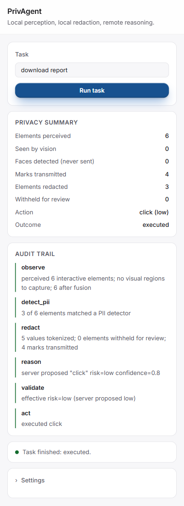
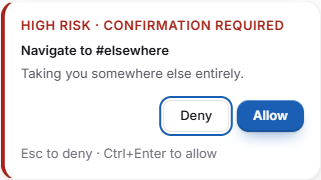

Smart India Hackathon 2026 · Problem Statement 26171 (ISRO)
On-Device Visual Perception for Light-weight Browser Agents
"A browser agent that sees the page on YOUR device, hides your
private data, and only then asks an AI what to do."
100%PII recall (397/397 values found)
93.1%PII precision (NER-verified)
0 / 400private values leaked on the wire
42 / 42faces detected — never transmitted
Demo Presenter's Guide — everything to say and do, in order.
1 · The problem, in 30 seconds
AI browser agents are coming: you type "download my report" and the agent
clicks through the website for you. But to act on a page, the agent must first
see the page — and our screens are full of private data: names, phone numbers,
Aadhaar numbers, card numbers, even our faces in photos.
Most agents today send a raw screenshot of your screen to a cloud AI. That is
the privacy disaster ISRO's problem statement asks us to solve:
SAY: "The problem statement asks for an agent that perceives the
screen on the device itself, removes private information before anything
leaves, and still completes real browsing tasks — light enough to run inside a
normal browser."
2 · What PrivAgent does
1. OBSERVE read DOM + screen pixels (OCR, faces) — on device
Only after stage 3 does anything leave the device — and what leaves is a short list
of screen elements where every private value has been replaced by an opaque token like
[PII_PHONE_01]. The AI can still say "click the callback
link" without ever learning the phone number.
Never leaves the device
What the AI actually receives
Screenshots and pixels · faces · page URLs · passwords and credential fields ·
the real values behind every token · the token dictionary itself
A numbered list of on-screen elements, e.g. M2 [link] "Request callback on [PII_PHONE_01]"
plus the task text and, in multi-step mode, a short redacted history.
SAY: "Every task shows a live audit trail of these six stages,
and a panel called 'What left this device' shows the exact message the AI
received — you will see the tokens standing where my private data was."
3 · What I used to build it
Technology
What it does
Say this if asked
YuNet (ONNX)
Face detection on the screenshot — on device.
"Faces are PII on sight. We detect them locally and they are never sent — we even paint them out of the buffer before OCR reads it."
Tesseract OCR
Reads text that exists only as pixels (canvas charts, images) — on device.
"Text in an image is as sensitive as DOM text, so OCR output enters the same privacy firewall by the same door."
TinyBERT NER (int8, 14.5 MB)
A tiny on-device language model that double-checks name candidates found by rules.
"Rules give us 100% recall, the tiny model removes false alarms — precision went from 69.6% to 93.1%, recall untouched."
ONNX Runtime Web
Runs the models in the browser: WebGPU when available, WASM fallback.
"All inference is inside the browser — no native app, no driver, works on plain laptops."
"Structured PII is caught by verified patterns; fuzzy things like names get the hybrid treatment."
WebExtension (MV3)
The agent itself — installs in Chrome and Firefox, works on any website.
"No site integration needed. It perceives any page the way a screen reader would."
FastAPI reasoner server
Receives only the redacted element list, returns ONE validated action.
"The server re-validates everything; a hallucinated element id is rejected and retried."
Two AI brains
Qwen2.5-1.5B via Ollama — fully offline, open-source. Claude on our Azure deployment — the fast brain used in today's demo.
"All rubric numbers were measured on the offline open-source model, as the problem statement requires. The demo uses our cloud brain for speed — switching is one line in a config file, and the privacy boundary is identical for both."
Measured results (from the repo's own test suites — nothing hand-waved)
What was measured
Result
PII detection recall (400-value labelled dataset, 42 real captured pages)
397/397 detectable values found (100%)
PII detection precision (after on-device NER verification)
93.1%
Private values reaching the network (wire-captured by a recording proxy)
0 of 400
Faces detected and withheld
42/42 — zero transmitted
Visual element accuracy
F1 ≈ 92%, OCR 90–97%
Speed per step (demo brain / offline brain)
≈ 5–10 s / ≈ 11–15 s
4 · Demo setup — do this once, 5 minutes before
1
Start the backend. Open PowerShell and run:
cd C:\Users\Shiva\Downloads\project\PrivAgent
$env:PYTHONPATH = "server"
python -m uvicorn app.main:app --app-dir server --host 127.0.0.1 --port 8000
Wait for Uvicorn running on http://127.0.0.1:8000. Keep this window open.
2
Load the extension in Firefox. Address bar →
about:debugging#/runtime/this-firefox → Load Temporary Add-on… →
select extension\dist\firefox\manifest.json.
3
Check site access.about:addons → PrivAgent →
Permissions → "Access your data for all websites" = ON.
(Re-check this after every add-on reload.)
4
Pin the icon. Puzzle-piece button 🧩 → PrivAgent → ⚙ → Pin to Toolbar.
5
Detach the panel. Open the popup → click "⧉ Keep open".
The panel becomes its own window that stays open while you switch tabs — put it
beside the browser so judges see both.
6
Verify the reasoner. Popup → Settings → Reasoner URL must be
http://127.0.0.1:8000. If not: clear the field, type it, Save.
7
Warm up. Open any website, run a single-shot task
(e.g. "find the search box"). The first run loads ~33 MB of local models;
after it, everything is fast.
Screen layout for judges: browser window on the left,
detached PrivAgent panel on the right. Everything interesting — live steps, audit
trail, the "What left this device" panel — is on the right side.
The two panels to point at during every demo
Audit trail — six stages per step, live:
observe → detect_pii → redact → reason → validate → act, with counts like
"9 values tokenized; 16 elements withheld".
What left this device (redacted) — the exact message the AI received.
Private values appear as highlighted tokens like [PII_PHONE_01].
This is the proof, on screen, in front of the judges.
DEMO 1 · Wikipedia — a multi-step task on a real siteverified live: done in 2 steps, ~32 s
Shows the PS requirement: an agent that completes a real browsing task across
page navigations, perceiving each page on-device.
1
Open https://en.wikipedia.org in the active tab.
2
In the PrivAgent panel: tick Multi-step, type
search for ISRO, press Run task.
3
Narrate what appears: "Running step 1…" — the agent reads the
page locally, sends only the redacted element list, the AI answers
"type the query and press Enter". The page navigates to the ISRO article.
4
Step 2: the agent sees the new page's title, recognises the goal is
reached, reports "Task completed after 2 step(s)".
5
Point at the audit trail: two full six-stage passes. Then open
"What left this device" and scroll it.
SAY while it runs: "The agent survives the page change because
the controller lives in the extension background — the AI never sees the URL, only the
redacted page title. Watch it realise on its own that the article is open, and stop."
Verified run: the agent typed the search, submitted it, and landed on the ISRO article — then said "done" by itself.
DEMO 2 · Amazon.in — a commercial site, with visible redactionverified live: done in 2 steps, ~37 s
Shows the PS requirement: works on heavy real-world pages (200+ elements), and
the privacy firewall visibly redacting real personal data.
1
Open https://www.amazon.in (logged-in account makes the
redaction moment stronger — your own name/addresses get tokenized).
2
Tick Multi-step, type search for usb microphone, Run.
3
Step 1: the agent types into Amazon's search box and presses
Enter itself — the results page loads. Step 2: it recognises the results are
shown and reports done.
4
Point at the audit trail line like
"16 of 206 elements matched a PII detector … 9 values tokenized … withheld" —
that is real personal data on a real site being caught live.
5
Open "What left this device": show highlighted tokens standing
where account details were.
SAY: "This page had over two hundred elements and my real account
details on it. Look at what the AI actually received — every private value is a token.
My data never left this laptop as data."
If a confirmation dialog appears on the page (the agent may
rate an action as consequential): approve it live and SAY: "This is the
human-in-the-loop gate — anything risky needs my explicit yes. Ordinary browsing runs
free; payments, submissions and deletions always stop here."
DEMO 3 · BBC.com — click-navigation on a huge news siteverified live: done in 2 steps, ~24 s
Shows the PS requirement: a different action type (finding and clicking the
right link, not typing) on one of the heaviest mainstream pages on the web — proving
the agent is universal, not tuned to any one site.
1
Open https://www.bbc.com.
2
Tick Multi-step, type open the sport section, Run.
3
Step 1: from hundreds of headlines, links and menus, the agent picks
the one correct "Sport" link and clicks it. The page navigates to
bbc.com/sport.
4
Step 2: it sees the Sport section is open and reports
"Task completed after 2 step(s)".
5
Open "What left this device": hundreds of elements were seen
locally, only a compact redacted list was sent per step.
SAY: "Nothing here is hard-coded — no site-specific selectors,
no BBC integration. The agent perceives any page the way a screen reader would, and the
same six privacy stages run on every step, on every site."
Spare demo (if a site misbehaves): https://www.python.org
with task open the downloads page — verified: done in 2 steps, ~25 s.
The 30-second closer — sites that block robots
1
If any site during the demo shows a CAPTCHA or a "checking your
browser" page, do not touch anything — let the agent answer.
2
It stops at step 1 with "Stopped: this site blocks automation"
— and the audit trail shows zero reasoning requests were sent.
SAY: "When a site says no to robots, we stop — detection, never
evasion. That behaviour is built in and unit-tested against reCAPTCHA, hCaptcha,
Turnstile and Cloudflare challenge pages."

The panel judges watch: summary, audit trail, live status.

The risk gate: consequential actions need a human yes.
The PowerShell window died or the URL changed. Restart the backend
(Ctrl+C → up-arrow → Enter) and check Settings → Reasoner URL =
http://127.0.0.1:8000.
"No web page tab to run the task against"
Click on the website tab first (make it the active tab), then Run again.
"vision unavailable … initWasm() failed" in the trail
Reload the add-on (about:debugging → Reload) and re-check the permissions
toggle. The task still works DOM-only meanwhile.
Popup closed by a mis-click
Nothing is lost: reopen it — it re-attaches to the running task with live
progress, and your typed task text is restored.
A site is very slow / misbehaves
Press Stop, switch to the next demo site. Wikipedia is the most
reliable; do it first.
6 · Likely judge questions — short answers
Question
Answer
"Does it work fully offline?"
"Yes — all perception is on-device, and the reasoner runs offline on
Qwen2.5-1.5B via Ollama. Every rubric number was measured on that offline path.
Today's demo uses our own Azure AI deployment as the brain for speed; switching is
one config line and the privacy boundary is identical."
"What exactly leaves the device?"
"Only this —" (open 'What left this device') "— a redacted element list.
Never screenshots, never URLs, never faces, never credential fields, never the real
values behind the tokens."
"Chrome and Firefox?"
"Both. Same codebase, MV3, live-verified in Firefox — that is what you are
watching right now."
"What about sites that block bots?"
"We detect the challenge and stop before sending a single request. We never try
to defeat a CAPTCHA — that is a hard rule in the system prompt and in code."
"What if the AI proposes something wrong or risky?"
"Three defences: the server rejects actions on elements that don't exist; the
client re-scores risk locally and can only raise it, never lower; and anything
above low risk needs my explicit approval on screen."
"How heavy is it?"
"The models total ~48 MB on disk (14.5 MB NER + YuNet + OCR data), loaded
lazily and released when idle. It runs on this ordinary laptop, in the browser."
PrivAgent · SIH 2026 · PS 26171 — all numbers
reproducible from the repository's test suites (npm test,
npx playwright test, test-results/).